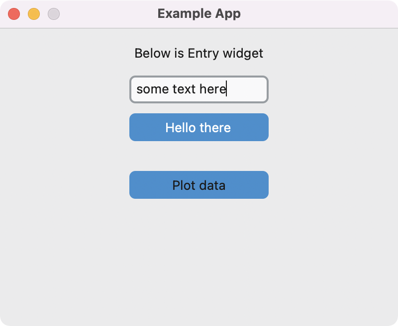

Theme customtkinter
November 8, 2022
Example of a Tkinter app using the customtkinter theme. This theme will automatically change to light or dark mode when the macOS appearance changes. More information about the theme is available on GitHub at TomSchimansky/CustomTkinter.
import customtkinter as ctk
import matplotlib.pyplot as plt
class MyApp:
def __init__(self, root):
self.root = root
self.configure_window()
self.create_widgets()
def configure_window(self):
self.root.title('Example App')
self.root.geometry('400x300')
self.root.resizable(False, False)
def create_widgets(self):
ctk.CTkLabel(master=self.root, text='Below is Entry widget').pack(pady=10)
ctk.CTkEntry(master=self.root).pack()
ctk.CTkButton(master=self.root, text='Hello there', text_color='white').pack(pady=10)
ctk.CTkButton(master=self.root, text='Plot data', command=self.create_plot).pack(pady=20)
def create_plot(self):
# Numbers to plot
numbers = [1, 2, 5, 4, 8, 10, 7]
# Create plot
fig, ax = plt.subplots(tight_layout=True)
ax.plot(numbers)
ax.set_xlabel('X axis')
ax.set_ylabel('Y axis')
ax.grid(color='0.8')
ax.set_frame_on(False)
ax.tick_params(color='0.8')
# Show window containing the plot figure
plt.show()
if __name__ == '__main__':
root = ctk.CTk()
MyApp(root)
root.mainloop()


🐍 Pythonic Programming
by Gavin Wiggins © 2022